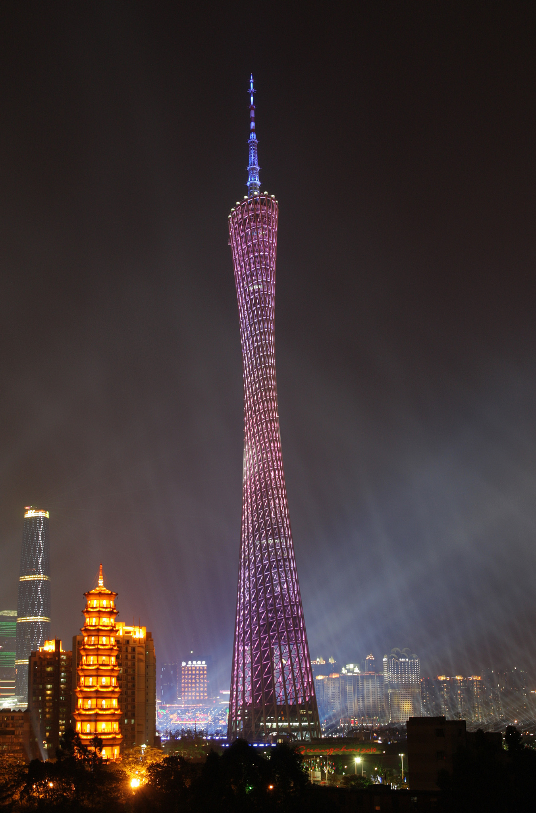
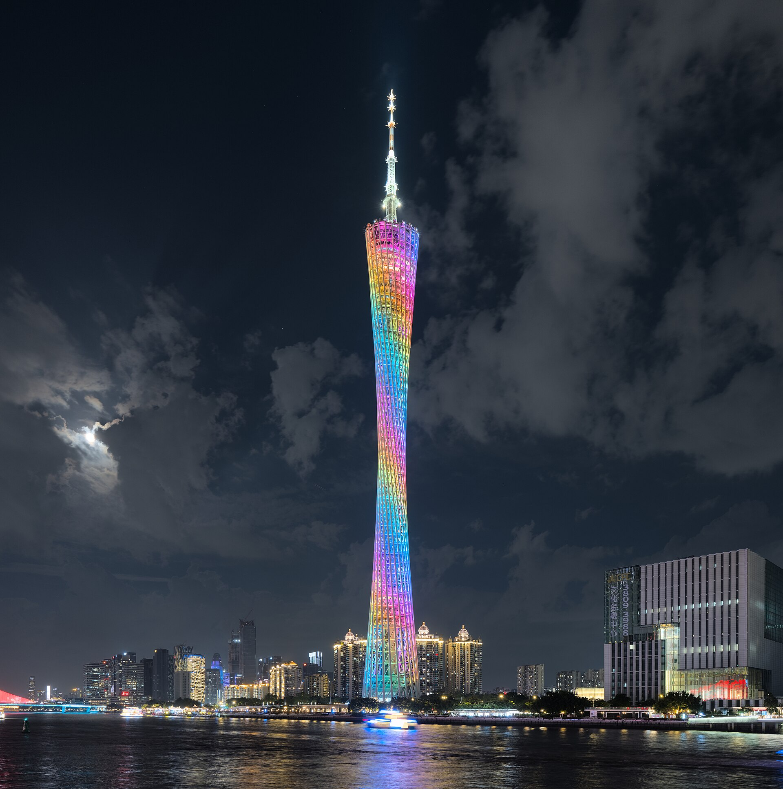

广州塔
一座高 600 米、由钢与混凝土共同撑起的广州地标。
向下拆解细腰不是装饰，
它是结构长出来的形状。
广州塔坐落在珠江南岸。它的轮廓来自两只椭圆平面在高度方向逐渐旋转、收放：外部钢格构围出扭转的塔身，内部混凝土核心筒承担竖向支撑。塔身向上收紧，再由天线桅杆把高度延伸到 600 米。

两只椭圆，
拧出一道细腰。
设计从两个不同高度的椭圆平面出发。上方平面相对下方旋转，连接它们的外轮廓随之扭转、收束，形成广州塔辨识度最高的“腰”。
一个在地面，一个位于约 450 米高处。上下平面的方向差，让塔身获得扭转的几何起点。
示意图仅解释形体关系，不代表施工图。连接上下平面的曲线和斜向构件交织成网格。收紧的腰身也让外轮廓随着高度发生变化。
设计：Information Based Architecture（IBA）从方案到广州天际线
把十余年的设计与施工压缩成五个节点。日期按公开资料记载，塔身主体与塔顶高度分开标注。
设计构想启动
项目方案开始形成，扭转的椭圆几何成为塔身形态的起点。
工程开工
广州塔进入施工阶段，塔身与基础工程陆续展开。
塔身封顶
454 米高的塔身主体完成封顶，随后继续建设顶部桅杆。
工程建成
主体工程完成，总高度由塔身与天线桅杆共同构成。
对公众开放
广州塔于 2010 年 9 月底正式开放，成为城市观光地标。

＋ 146 米桅杆
＝ 600 米
公开的工程研究将总高拆为 454 米主体结构和 146 米天线桅杆。塔身完成封顶后，顶部桅杆继续施工，最终形成今天的完整高度。
从外到内，
看它怎样站起来。
广州塔采用“筒中筒”结构：外部钢格构勾勒扭转轮廓，内部钢筋混凝土核心筒形成稳定的中心骨架。
剖面为结构关系示意，比例与构件位置已简化
钢格构包住核心筒
外部钢结构并非贴在塔身上的装饰层。钢柱、环向构件与斜撑共同形成格构外筒；中间的混凝土核心筒构成内筒，两者组成筒中筒体系。
图示用简化几何展示“外钢格构 + 混凝土核心筒 + 天线桅杆”的组成关系，不是施工图；实际节点、截面与受力细节以工程设计资料为准。

让高度成为一段城市体验。
塔内设置观光空间与高速电梯等设施，塔顶桅杆和塔身灯光共同构成夜间天际线。远看是一条扭转的轮廓，走进塔内，则是观景、交通与设备系统共同工作的垂直空间。
资料与图片来源
建筑信息以公开资料交叉核对；图片作者与授权列于下方。照片授权 / Wikimedia Commons
“Canton Tower 20241027” — Tim Wu，CC BY-SA 4.0；“Canton tower in asian games opening ceremony” — Colin Zhu，CC BY-SA 2.0；“Canton Tower at night Guangzhou 2024 dllu” — Daniel Lu，CC BY-SA 4.0。
“View of Canton Tower near Guangzhou Library” — そらみみ，CC BY-SA 4.0。该照片保留于本地资源目录，未用于当前页面。点击各图片署名可查看原始页面与完整授权信息。